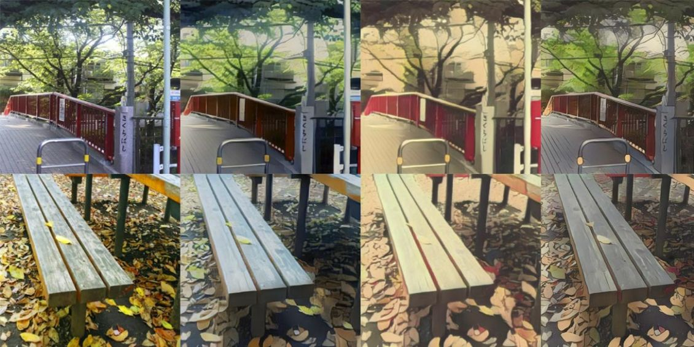
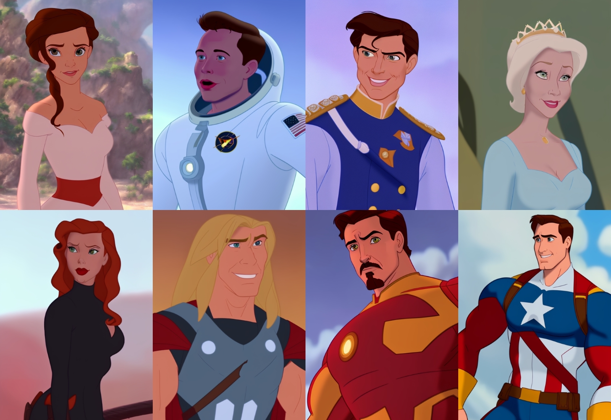
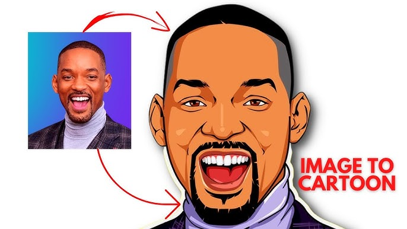

Comment fonctionne la Cartoonification par IA des fresques ?
La cartoonification est un processus par lequel une image réaliste, comme une fresque ou une photo, est transformée en une illustration stylisée, souvent proche d’un dessin animé. Dans le cadre de la transformation de fresques, l’objectif est de conserver l’expression et la richesse visuelle de l’œuvre tout en simplifiant les formes et en accentuant certains traits caractéristiques, comme les contours et les couleurs . Ce processus vise à rendre les fresques plus accessibles visuellement et à créer un effet artistique unique, qui peut être très utile dans des projets de conservation ou de présentation numérique des œuvres.
Sur le plan technique, la cartoonification par IA analyse d’abord la structure de l’image. En particulier, elle repère les bords et les formes principales de la fresque, avant d’appliquer des algorithmes pour simplifier les textures, lisser les couleurs et accentuer les détails importants, tout en créant un rendu de type cartoon. Cette approche permet de simplifier l’image tout en préservant l’essence et l'identité visuelle de l'œuvre.
Ce qui rend la cartoonification par IA particulièrement intéressante dans le contexte des fresques, c'est la possibilité de créer une interprétation artistique tout en maintenant la structure de l’œuvre originale. Ce processus est extrêmement utile pour la conservation numérique ou pour la diffusion des fresques de manière plus accessible et engageante pour un large public.
En résumé, la cartoonification avec IA consiste à transformer une image complexe en une version simplifiée et stylisée, tout en préservant les éléments visuels essentiels et en créant une version de l’œuvre qui reste fidèle tout en étant plus graphique et expressivement forte.
Pour automatiser ce processus de transformation en style cartoon, plusieurs approches en intelligence artificielle ont été développées. Chaque méthode repose sur des modèles spécifiques, avec leurs avantages et limites, mais toutes visent à simplifier les traits, accentuer les formes et styliser l’image de manière cohérente. Nous allons explorer les principales familles de modèles IA utilisées aujourd’hui pour la cartoonification d’images – des générateurs adverses aux modèles de diffusion, en passant par ceux spécialisés dans les portraits.
🤖 1. Réseaux adverses génératifs (GANs) pour la Cartoonification
Les réseaux adverses génératifs (GANs) sont des modèles d’intelligence artificielle composés de deux réseaux : un générateur et un discriminateur. Le générateur apprend à transformer des images en style cartoon, tandis que le discriminateur évalue la qualité de l’image générée. Ces modèles sont particulièrement efficaces pour créer des rendus visuels stylisés de fresques, en capturant les contours et les couleurs caractéristiques du style cartoon.
Des architectures comme CartoonGAN et AnimeGAN sont spécialement conçues pour travailler avec des images de type « dessin animé ». Elles peuvent appliquer une stylisation cartoon sur des fresques tout en conservant l’intégrité de l’œuvre. Ces IA sont capables de générer des images rapidement, ce qui les rend idéales pour des applications en temps réel, tout en étant très adaptées à des projets artistiques numériques.
🌫️ 2. Modèles de diffusion pour des Cartoonifications créatives
Les modèles de diffusion, comme Stable Diffusion, sont utilisés pour générer des images stylisées à partir d’une version bruitée de l’image originale. Ce processus de débruitage peut être guidé par des prompts textuels tels que "style cartoon" pour donner une direction créative à l’image. Les modèles de diffusion offrent un grand potentiel pour styliser des fresques de manière très originale, permettant de créer des interprétations visuelles nouvelles tout en conservant une certaine cohérence avec l'image d'origine.
Ces modèles sont très flexibles et puissants pour créer des rendus riches et créatifs, mais peuvent parfois offrir moins de contrôle sur la fidélité de l’image par rapport aux méthodes plus directes comme les GANs.
Il est important de noter que ces modèles sont surtout utilisés pour la cartoonification de visages et n'est pas optimal pour des fresques détaillées. Ceci-dit il est quand même util d'en savoir son fontionnement.
👤 3. Stylisation de portraits pour une Cartoonification précise
La stylisation de portraits est un domaine où l’IA est particulièrement performante. Des modèles comme Toonify et VToonify utilisent des espaces latents pour encoder et manipuler les traits du visage. Bien que ces modèles soient optimisés pour les portraits humains, leur approche peut également être adaptée pour styliser les éléments de personnages ou figures présentes dans des fresques, en appliquant des traits caricaturaux tout en préservant l'identité visuelle.
Cette approche permet de maintenir une forte cohérence visuelle, ce qui est particulièrement important pour les fresques représentant des personnages ou des scènes humaines. Les fresques peuvent ainsi être transformées en œuvres visuellement simplifiées mais encore reconnaissables.